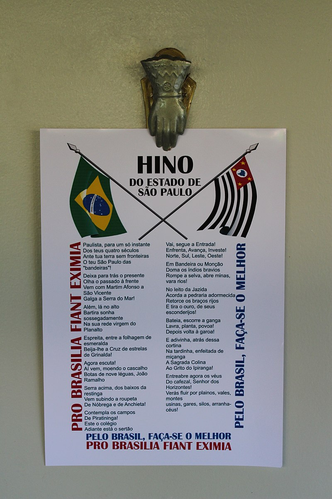

segue o hino do estado de são paulo

Paulista, para um só instante.
Dos teus quatro séculos,
Ante tua terra sem fronteiras,
O teu São Paulo das "bandeiras"!
Deixa para trás o presente,
Olha o passado à frente,
Vem com Martim Afonso a São Vicente,
Galga a Serra do Mar!
Além, lá no alto,
Bartira sonha sossegadamente.
Na sua rede virgem do Planalto.
Espreita, entre a folhagem de esmeralda,
Beija-lhe a Cruz de estrelas de Grinalda!
Agora escuta!
Aí vem, moendo o cascalho,
Botas de nove léguas, João Ramalho;
Serra acima, dos baixos da restinga,
Vem subindo a roupeta,
De Nóbrega e de Anchieta!
Contempla os campos,
De Piratininga!
Este o colégio,
Adiante está o sertão.
Vai, segue a Entrada!
Enfrenta, Avança, Investe!
Norte, Sul, Leste, Oeste!
Em Bandeira ou Monção,
Doma os índios bravios,
Rompe a selva, abre minas, vara rios!
No leito da Jazida,
Acorda a pedraria adormecida,
Retorce os braços rijos,
E tira o ouro, de seus esconderijos!
Bateia, escorre a ganga,
Lavra, planta, povoa!
Depois volta à garoa!
E adivinha, atrás dessa cortina,
Na tardinha, enfeitada de miçanga,
A Sagrada Colina,
Ao Grito do Ipiranga!
Entreabre agora os véus,
Do cafezal, Senhor dos Horizontes!
Verás fluir por plainos, vales, montes,
usinas, gares, silos, cais, arranha-céus!
VOLTE AO SITE INICIAL AQUI